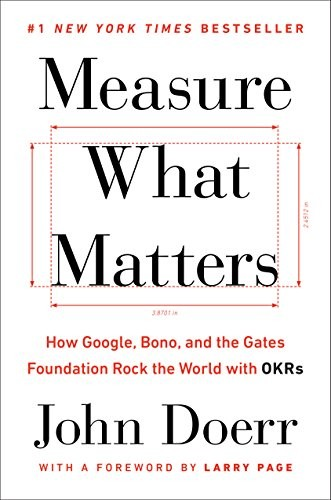

约翰·杜尔（John Doerr）是硅谷最具影响力的风险投资人之一，现任凯鹏华盈（Kleiner Perkins）主席。他曾是谷歌和亚马逊的早期投资人及董事会成员，两家公司的崛起使他近距离观察到，在高速增长的混乱中，什么样的管理工具能够帮助一个组织保持聚焦而不失速。《衡量什么重要》出版于2018年，是杜尔将自己数十年投资与董事会经验提炼成文的成果。书中核心是他从英特尔传奇CEO安迪·葛洛夫那里学到并在此后数十年不断推广的目标管理方法——OKR（Objectives and Key Results，目标与关键结果）。
OKR 的底层逻辑出奇简单：设定一个雄心勃勃但清晰可辨的"目标"（Objective），再为每个目标配上三至五个可量化的"关键结果"（Key Results），用以衡量目标是否真正达成。看似简单，实则对组织文化提出了相当高的要求——它要求各级管理者公开承诺目标，定期透明地检视进展，并将考核重心从活动本身转向实际成果。杜尔在书中大量引用第一手案例：谷歌在早期采用OKR后如何实现爆炸式增长，盖茨基金会如何用OKR追踪全球卫生干预项目的效果，摇滚乐队U2的主唱波诺如何将这套方法引入其倡导工作。这些案例横跨科技、公益和文化领域，构成了对OKR适用边界的广泛论证。
书中特别值得关注的是对"拉伸目标"（stretch goals）的讨论。杜尔援引谷歌的实践指出，真正优秀的OKR往往不应被完全实现——如果一个目标设定得足够大胆，完成率在六七成就已代表了巨大的进步。这一理念与大多数企业考核文化中"必须百分百完成"的预期相悖，却恰恰是推动组织突破渐进式改良、实现量级跃升的关键。书中另一重要概念是CFR（Conversations, Feedback, Recognition，对话、反馈与认可），杜尔将其视为OKR的配套机制，主张以持续的即时反馈替代一年一次的年终考评。
谷歌联合创始人拉里·佩奇（Larry Page）为本书作序，写道："OKRs have helped lead us to 10x growth, many times over."（OKR帮助我们一次又一次地实现了十倍增长。）对于希望在组织内部建立目标对齐机制、提升执行一致性的管理者和创业者而言，《衡量什么重要》提供了兼具理论基础与实操指引的参考框架。它不仅是一本管理方法论的著作，也是一份关于如何让宏大愿景落地为可追踪行动的实践手册。